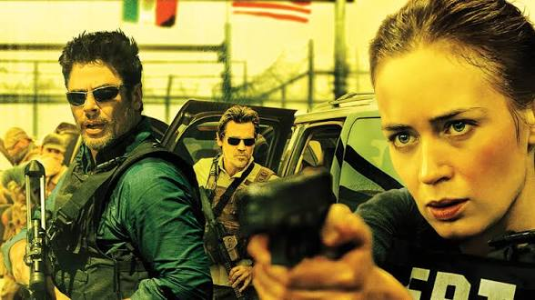

Sicario (2015) — CERTIFIED MGC AU-57

🏛 MGC LOWER COURT OF DELIBERATION
- ASSET TITLE: Sicario (2015)
- OFFICIAL REGISTRY GRADE: Certified MGC AU-57 (Choice About Uncirculated)
- LOWER COURT JURISDICTION: Judge Jane and Chief Grader MGC
- CASE FILE: #031
📜 THE INITIAL INQUEST BENCH ASSESSMENT
Under our strict 5x numismatic magnifying lens, Sicario strikes the planchet with monumental striking power and an incredibly heavy, ominous narrative luster. Driven by Roger Deakins’ masterful, razor-sharp visual cinematography and Denis Villeneuve’s tense structural pacing, the film looks like a pristine Mint State coin at first glance. However, the planchet experiences a very slight localized friction in the late second act where the narrative drive pivots away from Emily Blunt’s point-of-view tracking line to focus heavily on Benicio del Toro’s operative sequence. This localized tracking shift creates a minor circulation mark, capping the specimen at an elite AU-57.
🚨 THE THREE SPECIFIC PLANCHET FLAWS:
1. The Perspective Displacement Scuff
- The late-second-act layout shifts the baseline point-of-view away from the audience surrogate (Kate Macer) to focus on Alejandro’s solo operational path. While this creates a magnificent, chilling character study, it introduces a slight structural fragmentation to the overarching narrative frame.
2. The Specialized Sub-Plot Friction
- The localized sub-plot involving the corrupt Mexican police officer (Silvio) is woven throughout the background canvas. While it pays off beautifully at the baseline floor of the third act, its initial cutaways introduce minor microscopic pacing scuffs to the primary task-force momentum.
3. The Conceptual Bleakness Defect
- Under the 5x magnifying lens, the film’s relentless, unyielding tonal alloy lacks any dynamic narrative contrast. The sheer weight of the grim subject matter leaves a permanent, heavy gray fingerprint across the visual fields, which some conservative collectors find overly dense for repeated viewings.
⚖️ THE APPELLATE REVIEW & REVERSAL ARGUMENTS
Judge Jane stepped directly up to the console terminal, auditing the high-grade technical wear and issuing the following final decrees:
1. Motion 1 (The Perspective Shift Objection): OVERRULED.
- Judge Jane rules that the shift to Alejandro’s viewpoint is not a structural defect—it is the film’s defining masterstroke! It completely strips away standard Hollywood operational tropes, revealing the cold, clinical reality of the border drug war. The transition is smooth, pristine, and adds immense value to the coin’s final strike.
2. Motion 2 (The Silvio Background Sub-Plot): SUSTAINED.
- The Court agrees that the intermittent cutaways slightly disrupt the soaring, high-tension momentum established during the legendary Juarez border crossing sequence. These minor localized marks keep the asset securely out of the MS-70 Pristine Vault.
🔍 THE FINAL DECREE & CERTIFIED JUDGMENT
-
The Final Executive Verdict:
By maintaining an elite level of technical visual engineering, impeccable structural sound design, and a powerhouse cast performance, Sicario is certified at a magnificent MGC AU-57 Choice About Uncirculated grade. The silver registry parameters are active, the numerical stacking order is verified, and this near-flawless cinematic token is permanently logged into the About Uncirculated vault. Case closed! ⚖️🥈🦂

• © 2026 MOVIE GRADING CONSENSUS. All Sovereign Rights Reserved.